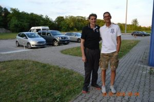

Rappresentative maschili e femminili.
10 Dicembre 2019 · by menego15
Stimolante novità in casa Tiziano Lorenzon Basket Personal Coaching, in aggiunta al lavoro che si svolge regolarmente, ormai da diverso tempo, la domenica mattina, informiamo che dopo la riunione tenutasi presso la sala del Coni a Udine, con la relazione di Alessandro Guidi, responsabile tecnico, e l'intervento di Giovanni Adami presidente Fvg, rivolta alle società sportive per aggiornare sull'attività e futuri programmi delle Rappresentative maschili e femminili, registriamo importanti novità, tra queste l'inserimento di Tiziano in qualità di allenatore per i giocatori interni.

Giornata dello Sport
24 Settembre 2019 · by menego15
Si è tenuta a Città Fiera la terza edizione della manifestazione «Giornata dello Sport». In un clima di grande partecipazione di ragazzi e famiglie, si sono svolte sfide a canestro e festa, culminata con la premiazione di alcune società sportive dai testimonial Giovanni Adami, presidente della Federbasket FVG, e Tiziano Lorenzon in qualità di Allenatore Nazionale ed ex Atleta Azzurro, oltre ad altri testimonial per altri sport.

Massimo Minto al Camp!
14 Luglio 2019 · by menego15
Qualche immagine dell'intervento di Massimo Minto, ex cestista e dirigente sportivo italiano, che ha avuto come argomento principale la questione dello svincolo atleti.
Massimo negli anni ottanta e novanta è stato un giocatore di Serie A.
In campo ricopriva il ruolo di ala. Attualmente è dirigente sportivo alla TDShop.it Livorno.